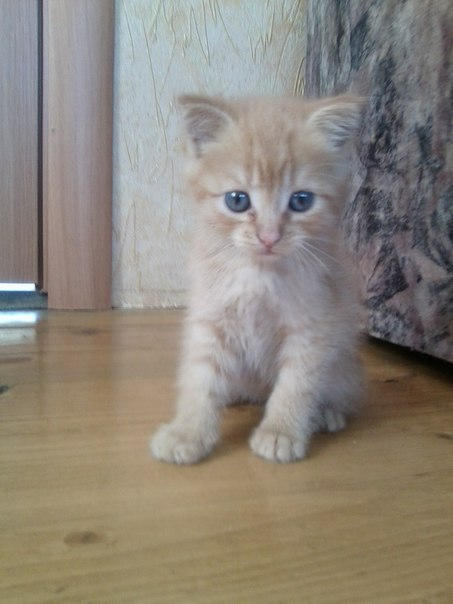

Мои домашние питомцы!
С самого детства у меня проявлялся интерес к различным животным. Гуляя по улице, я всегда обращала внимание на них, мне хотелось взять всех этих милейших созданий домой. И вот однажды мы с братом решили взять рыженького котёнка, поставив перед фактом родителей. Им сразу не понравилась эта идея, но они ничего не смогли с этим поделать.
Так у меня появился кот Гарфилд


К сожалению, его уже нет сейчас, но зато мы можем насадиться его "модельной карьерой")) Он любил смотреть телевизор, слушать музыку, переодеваться, спать и кушать. А ещё у него была девушка - соседская кошка Милка.